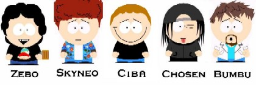

|
© 2004 Overburn |
.:':. OVERBURN.TOO.IT .:':.  (Clicca sulla caricatura di uno dei membri per accedere alla sua sezione) "Cos'è? Coooooooooooooooooos'è?" - Bumbu E' il sito degli "Overburn" gruppo di zona pavese tendenzialmente ROCK , all'attivo da 1 anno e mezzo con un repertorio di cover (Who,Radiohead,Oasis,ecc..) e una fiorente produzione di brano propri! Se vi interessa scopire il resto, il sito è qui a vostra disposizione!
Visitatori : © 2004 Overburn - WebMaster: The_Chosen_One |